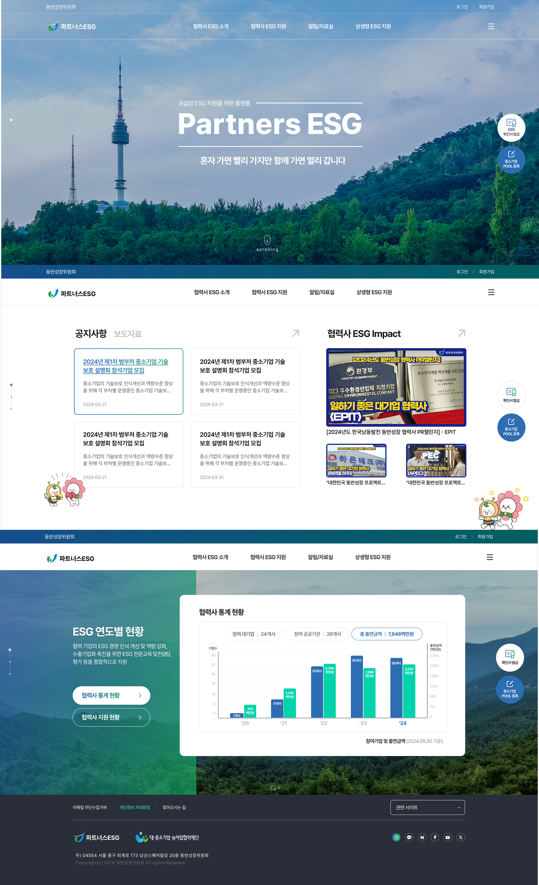
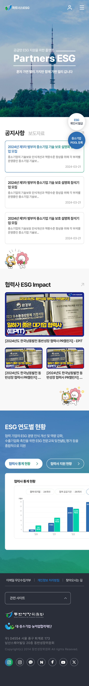

ESG
파트너스 ESG 홈페이지 제작
파트너스 ESG는 동반성장위원회 산하 ESG 사업 채널로, 본 사이트와 헤더·로그인·회원가입을 공유하는 패밀리 사이트 구조입니다. 모기관과의 시각적 일관성 확보와 ESG 서비스 고유 정체성 사이의 균형이 핵심 과제였습니다.
헤더·로그인·회원가입 등 공통 요소는 모기관 디자인 시스템을 그대로 상속해 운영 효율과 사용자 인지 일관성을 확보하는 한편, ESG 카테고리 전용 컬러·아이콘 체계를 통해 패밀리 사이트로서의 소속감은 유지하면서 ESG 서비스 본연의 목적성을 시각적으로 분리했습니다. 본 사이트와 동일한 1600px 캔버스·본문 사이즈를 적용해 두 사이트를 자연스럽게 오갈 수 있도록 설계했고, 운영 단계까지 일관성을 유지할 수 있도록 컴포넌트와 서브페이지 템플릿을 정리했습니다.
동반성장위원회 본 사이트와 병행 진행한 프로젝트로, 두 사이트의 시스템 일관성 관리가 디자인 의사결정의 주요 축이었습니다.
Project Goal
모기관 디자인 시스템을 상속하며 ESG 정체성을 분리하는 방향으로
동반성장위 본 사이트와 별개 채널 필요
헤더·로그인·회원가입 등 공통 요소 상속
운영 효율 + 사용자 인지 일관성 확보
운영 효율 + 사용자 인지 일관성 확보
ESG 사업의 시각 정체성 분리 필요
ESG 카테고리 전용 컬러·아이콘 체계 정의
소속감 유지 + 서비스 목적성 시각 분리
소속감 유지 + 서비스 목적성 시각 분리
두 사이트 간 사용자 이동 동선 부재
동일한 1600px 캔버스·본문 사이즈 적용
두 사이트를 자연스럽게 오갈 수 있도록 설계
두 사이트를 자연스럽게 오갈 수 있도록 설계
운영 단계 인계 가이드 부족
컴포넌트 분리·정리 + 서브페이지 템플릿 구축
운영 단계까지 일관성 유지
운영 단계까지 일관성 유지

